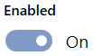
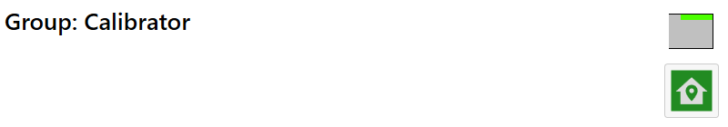
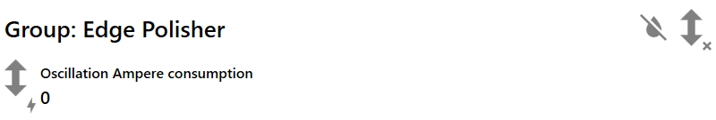
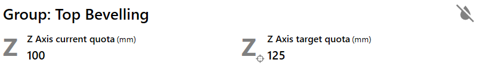
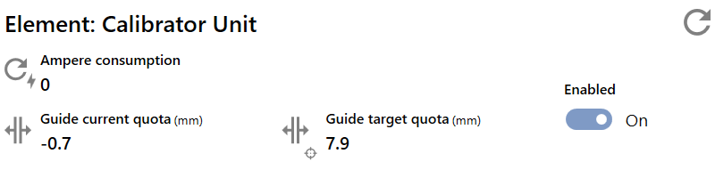
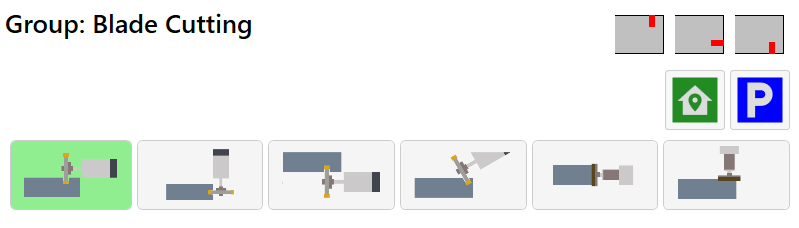
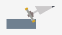

Durch Drücken auf das dreidimensionale Maschinenmodell werden Fenster zum ausgewählten Element und zur zugehörigen Arbeitsgruppe geöffnet.
Diese Fenster enthalten zwei Bereiche zur Anzeige der Echtzeitdaten und zur Konfiguration der Gruppe und des Elements.

Bereiche
Die in den einzelnen Fenstern bereitgestellten Informationen sind in zwei Bereiche gegliedert.

Variablen | |
 | Konfiguration |
Variablen
In diesem Bereich können die Variablen des ausgewählten Elements und der zugehörigen Gruppe in Echtzeit überwacht werden.

Gruppe
Im oberen Bereich werden die Positionen der gruppenspezifischen Achsen angezeigt: auf der einen Seite die aktuelle Position, auf der anderen die für die Rezeptbearbeitung anzufahrende Sollposition.
Außerdem wird stets angezeigt, ob die Wasserzufuhr für die Gruppe eingeschaltet ist.

Wasserbetrieb |
Element
Der untere Bereich zeigt die spezifischen Variablen des ausgewählten Elements. Die Variablen zum Einschaltzustand der Spindel und zur Stromaufnahme sind immer verfügbar.
Der Bediener kann die Deaktivierung des Elements unabhängig davon erzwingen, ob die entsprechende Bearbeitung im auf die Maschine geladenen Rezept enthalten ist.

 | Bearbeitungszustand |
 | Ampereverbrauch |
 | Element freigeben |
Konfiguration
In diesem Bereich muss der Bediener die Daten des am Element montierten Werkzeugs eingeben.

Gruppe
Im oberen Bereich werden die Symbole der Bearbeitungen angezeigt, die von der Gruppe ausgeführt werden können. In einigen Fällen stehen Schaltflächen zur Steuerung der Gruppenpositionierung zur Verfügung.
Wenn eine Gruppe mehrere Konfigurationen unterstützt, kann der Bediener die zu verwendende Konfiguration auswählen.

Element
Im unteren Bereich muss der Bediener die Daten des am Element montierten Werkzeugs eingeben. Für eine höchstmögliche Bearbeitungsgenauigkeit müssen diese Daten korrekt eingegeben werden.
Der Durchmesser des Werkzeugs muss immer eingegeben werden.

Kalibrier-/Reinigungsgruppe
Variablen
Im Bereich für die Gruppe werden die Variablen der Z-Achse angezeigt: auf der einen Seite die aktuelle Position, auf der anderen die für die Rezeptbearbeitung anzufahrende Sollposition.

Sowohl für das Kalibrierelement als auch für das Reinigungselement werden neben den allen Elementen gemeinsamen Variablen keine weiteren Variablen angezeigt.
Konfiguration
Im Bereich für die Gruppenkonfiguration wird das Symbol für die obere Kalibrier- und Polierbearbeitung angezeigt.
Darunter befindet sich die Schaltfläche, mit der die Gruppe in die Sicherheitsposition gefahren werden kann.

Sicherheitsposition |
Für das Kalibrierelement der Gruppe müssen Durchmesser und Dicke des montierten Werkzeugs festgelegt werden.

Für das Reinigungselement der Gruppe muss der Durchmesser des montierten Werkzeugs eingegeben werden.
Kantenpoliergruppe
Variablen
Im oberen Bereich wird die Stromaufnahme der Spindel angezeigt, welche die Oszillation der Gruppe ermöglicht. Oben ist erkennbar, ob die Oszillation aktiv ist.

 | Oszillationszustand |
Im darunterliegenden Bereich werden für jedes Reinigungselement ausschließlich die allen Elementen gemeinsamen Variablen angezeigt.
Konfiguration
Im Bereich für die Gruppenkonfiguration wird das Symbol für die Kantenpolierbearbeitung angezeigt.
Für jedes Reinigungselement der Gruppe muss der Durchmesser des montierten Werkzeugs eingegeben werden.
Gruppe für obere Fase
Variablen
Im Bereich für die Gruppe werden die Variablen der Z-Achse angezeigt: auf der einen Seite die aktuelle Position, auf der anderen die für die Rezeptbearbeitung anzufahrende Sollposition.

Für das Kalibrierelement werden zusätzlich die Positionen des Führungsschuhs angezeigt.

Für das Reinigungselement werden dagegen neben den allen Elementen gemeinsamen Variablen keine weiteren Variablen angezeigt.
Konfiguration
Im Bereich für die Gruppenkonfiguration wird das Symbol für die Bearbeitung der oberen Fase angezeigt.
Für das Kalibrierelement der Gruppe müssen Durchmesser und Dicke des montierten Werkzeugs festgelegt werden.
Für das Reinigungselement der Gruppe muss lediglich der Durchmesser des montierten Werkzeugs eingegeben werden.
Gruppe für untere Fase
Variablen
Im Bereich für die Gruppe werden keine Achsvariablen angezeigt.
Für das Kalibrierelement werden zusätzlich die Positionen des Führungsschuhs angezeigt.

Für das Reinigungselement werden dagegen neben den allen Elementen gemeinsamen Variablen keine weiteren Variablen angezeigt.
Konfiguration
Im Bereich für die Gruppenkonfiguration wird das Symbol für die Bearbeitung der unteren Fase angezeigt.
Für das Kalibrierelement der Gruppe müssen Durchmesser und Dicke des montierten Werkzeugs festgelegt werden.
Für das Reinigungselement der Gruppe muss lediglich der Durchmesser des montierten Werkzeugs eingegeben werden.
Sägeblattgruppe
Variablen
Im Bereich für die Gruppe werden die Positionen der Y- und der Z-Achse angezeigt: auf der einen Seite die aktuellen Positionen, auf der anderen die für die Rezeptbearbeitung anzufahrenden Sollpositionen.

Im Bereich für das Element werden nur die allen Elementen gemeinsamen Variablen angezeigt.

Konfiguration
Im Bereich für die Gruppenkonfiguration werden die Symbole der Bearbeitungen angezeigt, die von der Gruppe ausgeführt werden können.

Mit den unten angeordneten Schaltflächen kann der Bediener die Konfiguration der Sägeblattgruppe entsprechend dem gewünschten Verwendungszweck ändern.
Je nach Typ und Positionierung der Sägeblattgruppe stehen einige Betriebsarten möglicherweise nicht zur Verfügung; in diesem Fall werden sie nicht angezeigt.
 | Oberer Schnitt |  | Unterer Schnitt |
 | Kantenschnitt |  | Schnitt mit manueller Positionierung |
 | Kantenschleifen |  | Obere Kalibrierung |
Je nach Typ und Positionierung der Sägeblattgruppe stehen einige Betriebsarten möglicherweise nicht zur Verfügung; in diesem Fall werden sie nicht angezeigt.
Zum Ändern der Konfiguration oder zum Fahren der Gruppe in bestimmte Positionen werden die darunterliegenden Schaltflächen verwendet.
Ausgangsposition | |
 | Parkposition |
Wenn die Gruppe für das Schneiden mit Sägeblatt konfiguriert ist, muss der Benutzer im Bereich für das Element die Daten der am Element montierten Scheibe eingeben.
Eine erläuternde Abbildung zeigt, wie die Daten zu messen sind.

Wenn die Gruppe dagegen für Kalibrierbearbeitungen verwendet werden soll, müssen Durchmesser und Dicke des montierten Werkzeugs eingegeben werden.

Stockhammer-/Reinigungsgruppe
Das bei Auswahl der Stockhammer-/Reinigungsgruppe geöffnete Fenster enthält einen zusätzlichen Bereich.
 | Förderbandsteuerung |
Variablen
Im Bereich für die Gruppe werden die Positionen der Y-Achse angezeigt: auf der einen Seite die aktuellen Positionen, auf der anderen die für die Rezeptbearbeitung anzufahrenden Sollpositionen.

Im Bereich für das Element werden nur die allen Elementen gemeinsamen Variablen angezeigt.
Konfiguration
Im Bereich für die Gruppenkonfiguration werden die Symbole der Bearbeitungen angezeigt, die von der Gruppe ausgeführt werden können.

Mit den unten angeordneten Schaltflächen kann der Bediener die Konfiguration der Stockhammer-/Reinigungsgruppe entsprechend dem gewünschten Verwendungszweck ändern.
 | Stocken |
 | Reinigen |
Zum Ändern der Konfiguration oder zum Fahren der Gruppe in bestimmte Positionen werden die darunterliegenden Schaltflächen verwendet.
 | Parkposition |
 | Ausgangsposition |
Für das Stockhammerelement der Gruppe muss der Durchmesser des montierten Werkzeugs festgelegt werden.
Der Durchmesser dieses Elements muss für beide zulässigen Gruppenkonfigurationen festgelegt werden, da jeweils ein anderes Werkzeug montiert ist.
Für jedes Reinigungselement der Gruppe muss der Durchmesser des montierten Werkzeugs eingegeben werden.
Förderbandsteuerung
In diesem Bereich kann die Förderbandgeschwindigkeit für die Ausführung einer Stockbearbeitung gesteuert werden.

Förderband-Arbeitsgeschwindigkeit beim Stocken | |
 | Reduzierte Förderband-Arbeitsgeschwindigkeit beim Stocken |
 | Geschwindigkeitspriorität für Stocken anwenden |